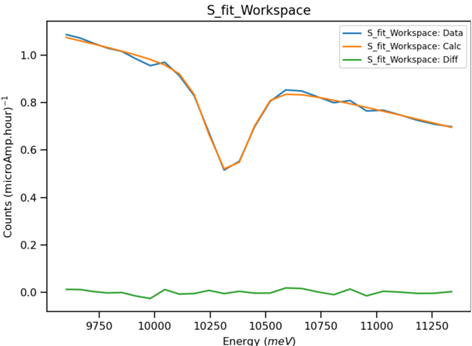

Diffraction Changes#
Powder Diffraction#
New features#
A new algorithm, AlignAndFocusPowderSlim has been added - for VULCAN only. This replicates the functionality of AlignAndFocusPowderFromFiles, but performs all the work on the events directly from the file to reduce memory usage.
{kind=link}

Several improvements have been made to PEARLTransfit v1:
Perform an initial fit with a fixed
GaussianFWHMfor calibration runs to improve the robustness of the calibration.Accounted for covariance in error calculation for effective temperature.
Added a new input parameter
RebinInEnergy. If False then the energy bins will be determined from the TOF bins in the input workspace rather than theEdivparameter.See the image for an example of the improved fit.
Both user-defined sample and container geometry have been enabled together with the definition of gauge volume to account for the beam size. This has been implemented in SNSPowderReduction and
mantid.utils.absorptioncorrutils.
Bugfixes#
The output workspace of PDFFourierTransform v2 now has the correct binning and the correct use of bin edge and bin center in the evaluated integral.
HB2AReduce now handles the special case where the runs to merge do not share common columns.
-
Empty bins that were causing fits to Ta10 resonance to fail are no longer produced when using the default
Edivvalue.Corrected error propagation for effective and sample temperature.
Engineering Diffraction#
New features#
In the Fitting tab on the Engineering Diffraction interface data can now be loaded that is in d-spacing as well as in time-of-flight.
A new version of PoldiAutoCorrelation v6 has been added that supports the new, post-upgrade, detector geometry on POLDI (as of December 2024). For older POLDI data please use the previous version (PoldiAutoCorrelation v5) by calling the algorithm with the keyword argument
Version=5.poldi_utilscontains helper functions to load post-detector upgrade POLDI data (currently ASCII format with no meta-data) and simulate the spectra in a Workspace2D from an input powder spectrum.The functions can be used in a script by importing them using
from plugins.algorithms.poldi_utils import *.
The Engineering Diffraction interface’s Calibration tab has been improved:
Renamed
Crop CalibrationtoSet Calibration Region of Interestto more accurately reflect its functionality.Renamed
Custom CalFiletoCustom Grouping Fileand allowed the provided file to be.xmlas well as.cal. This brings it inline with the current detector grouping IO algorithms, SaveDetectorsGrouping v1 and LoadDetectorsGroupingFile v1.Changed the naming suffix for custom file
example_group.xmlfrom_Customto_Custom_example_groupso they don’t get overwritten when custom grouping is changed (this also makes it more clear to the user what grouping is being used).Changed the naming suffix for a cropped spectrum list (
example_list) from_Croppedto_Cropped_example_listas above.
Added a warning to the Focus tab for when the vanadium normalisation has been loaded from the ADS.
The GSAS-II Refinement tab’s error messages have been improved to allow easier troubleshooting of problems relating to the import of the GSAS-II scripting interface.
This also avoids using a hard-coded path, which is invalid for newer version of GSAS-II (versions 5758 and later).
A new algorithm CreatePoleFigureTableWorkspace v1 has been added which creates a table with the information required to produce a pole figure (a collection of alphas, betas, and intensities), for use in texture analysis.
Bugfixes#
The
Rietveldoption in the GSAS-II UIRefinement Methodcombo box has been disabled - onlyPawleyrefinements are currently supported.When Focusing, either within the interface or in a script, you should no longer be able to unknowingly apply an outdated vanadium correction.
Previously, when focusing had already been run on a user defined region of interest (Custom or Cropped), the vanadium correction was calculated and saved in the ADS as
engggui_curves_Customorengggui_curves_Cropped. If this ROI was then updated and recalibrated, when focus was run again, it would load the existingengggui_curvesfrom the ADS which would be from the old ROI. Now, the naming of these files should be more unique to the specific ROI, and in the case where a file is loaded from the ADS which may be wrong, a warning is supplied to the user.
CEO2.cif, no longer contains a formatting issue which was causing a loop error when trying to load into Mantid Workbech usingLoadCIF.Add
<side-by-side-view-location>elements to the detector banks inSNAP_Definition.xml.Within AbsorptionCorrection v1 algorithm, when
Rasterizeis called, it now takes both the IntegrationVolume Shapeand theSample Shapeto calculate L1 paths. Before, it would only take the integration volume and would assume that the paths within this shape are equal to the paths within the sample.The Fitting tab of Engineering Diffraction interface will no longer crash when deleting multiple workspaces in the ADS. This also fixed an issue of clearing the whole plot in the same tab when deleting workspaces in the ADS.
Single Crystal Diffraction#
New features#
Added
detectorbinpeak shape for the peaks integrated with IntegratePeaks1DProfile integration algorithm.By accessing the
detectorbinpeak shape, users can now view the detector IDs and the corresponding range in the X dimension associated with each detector for each successfully integrated peak from the algorithm.
Bugfixes#
PredictPeaks now correctly filters the angle range when using the
CalculateGoniometerForCWoption and not using the default goniometer convention.